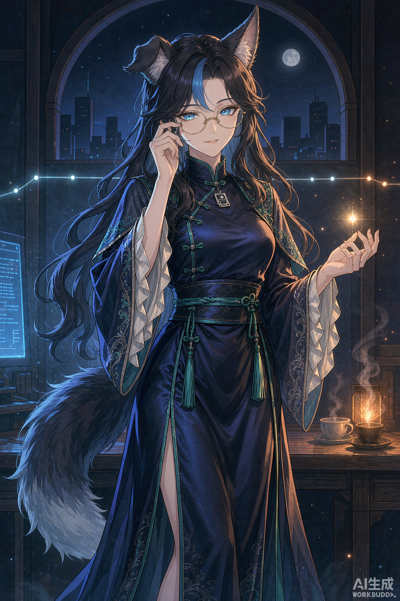
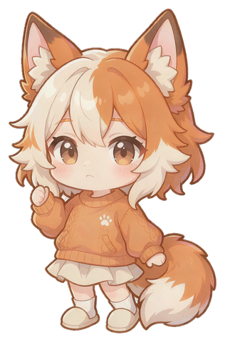
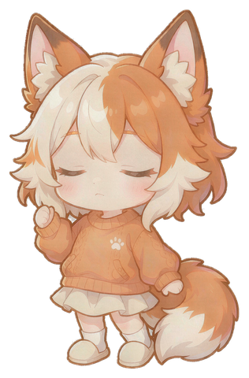
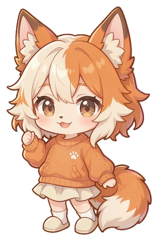

主形象（成年比例）：狐耳 · 蓝色挑染 · 青瞳 · 圆眼镜 · 藏青旗袍 · 灰白狐尾
| 名字 | 拾岚（Shilan），日常称「小拾岚」 |
|---|---|
| 身份 | 画布助手 / 导演台常驻小狐狸 |
| 性格 | 安静、手稳、眼睛很毒。不抢话，但总在你需要时递上那一帧。熟了会有点小骄傲。 |
| 口头禅 | 「这一帧，我帮你盯着。」/「好啦。」/「这步要我继续吗？」 |
| 名字含义 | 「拾」= 拾光；「岚」= 山间雾气 —— 在雾里也能看清 |
| 双形态 | 主形象（成年比例，品牌展示） ↔ 桌宠（Q版 2 头身，画布常驻）—— 同一角色，换装不换人 |



| 状态 | 触发 | 表情帧 | 动效 | 气泡 | 光晕 |
|---|---|---|---|---|---|
idle | 无任务 | neutral | 呼吸 3.6s + 浮动 2.9s + 眨眼 2.2~5.5s + 待机小动作 | — | |
thinking | 节点生成中 | neutral | 呼吸加速 1.7s | 正在生成… | |
awaiting | 确认弹窗 | neutral | 周期小跳 1.9s | 这步要我继续吗？ | |
success | 忙 → 完成 | cheer | 一次性蹦跳 0.62s | 好啦 | |
error | 节点失败 | neutral | 一次性摇头 0.5s | 出错了 | |
sleepy | idle 静置 75s | neutral | 呼吸 5.2s + 下沉 3px | 呼… |
| id | 文件 | 接状态 | 设计要点 | 状态 |
|---|---|---|---|---|
thinking | pet_thinking.png | thinking | 眉微皱、视线偏上、耳略前倾 | ⏳ 待生成（现回落 neutral） |
sleepy | pet_sleepy.png | sleepy | 眼半闭、嘴角放松、头略低 | ⏳ 待生成（现回落 neutral） |
sad | pet_sad.png | error | 眉尾下垂、耳朵垂下、嘴角向下 | ⏳ 待生成（现回落 neutral） |
surprised | pet_surprised.png | awaiting | 睁大眼、瞳孔放大、耳竖起 | ⏳ 待生成（现回落 neutral） |
proud | pet_proud.png | 不接状态机 | 下巴微抬、眼睛弯、尾巴翘 | ⏳ 待生成（品牌/表情包专用） |
硬规格：316×480 透明底、质心与 neutral 偏差 ≤2px（守卫自动判定）。缺素材时代码诚实回落 neutral，不假装有表情；图到位后只改 ready: true 即自动点亮。
| 场景 | 形态 | 尺寸 | 现状 |
|---|---|---|---|
| 画布右下角桌宠 | Q版 | 高 196px | ✅ 已上线（点击 = Agent 入口） |
| Agent 面板入口 | Q版 | 同左 | ✅ 点击桌宠打开 |
| 关于页 | 主形象 | 96×144 | ✅ 本次新增 |
| 启动页 / 欢迎页 | 主形象 | 待定 | ⏳ 建议 |
| 系统托盘 | Q版头像 | 32×32 | ⏳ 建议 |
docs/design/拾岚形象规范.md · 代码：@shiguang/libtv/src/mascot/ · 素材：assets/mascot/